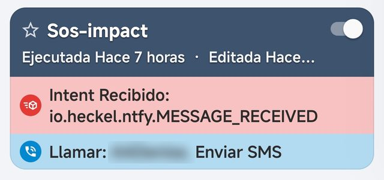

Automatic SMS and calls
What you get
When the watch detects a fall or you press SOS, your phone automatically sends an SMS with a sentence and your location link (and, if you like, places a call) to the person you choose. The watch cannot send SMS by itself (Zepp OS does not allow it), so the path is: watch → Zepp app on the phone → ntfy (push alert) → MacroDroid → SMS.
- Enable ntfy in SOS Impact. In the Zepp app open the SOS Impact settings, find the ntfy alert box and tap Enable ntfy. A secret topic appears, like
sosimpact-…. Tap Send ntfy test and check that it says "Test sent". Copy the topic: you will use it in steps 2 and 4. Do not publish it: anyone who knows it can read your alerts.
SOS Impact settings in the Zepp app: the “ntfy alert” box with the secret topic and the “Send test via ntfy” button. (Example image.) - Install and subscribe in the ntfy app. Install ntfy (Google Play or F-Droid), tap + and type the topic from step 1 (server ntfy.sh unless you use your own). A notification must arrive when you send the test. If nothing arrives, check the topic is typed exactly the same.

ntfy "Subscribe to topic" screen (shown in Spanish): type your topic (blurred here) and tap SUBSCRIBE. - Turn on "Broadcast messages" in ntfy. In ntfy: ⋮ → Settings → scroll to Broadcast messages and enable it. Without this ntfy does not notify MacroDroid.

ntfy settings: "Broadcast messages" enabled (shown in Spanish). - Create the macro in MacroDroid: the trigger. Macros → + → Triggers → Device/Applications → Intent Received. Fill in:
Field Value Action io.heckel.ntfy.MESSAGE_RECEIVEDPackage (if the field appears) io.heckel.ntfyIntent Extra 1 — name topicIntent Extra 1 — value to match only your topic, e.g. sosimpact-abc123(no "topic=" and no spaces)Intent Extra 2 — name titleIntent Extra 2 — value to match ?*(at least one character: so the macro only fires for the first alert, which has a title, and not for the follow-up messages)Intent Extra 2 — save to variable tap + and create a text variable called tituloThe most common mistake is typing a different word as the extra name, or putting
topic=in front of the value: the name must be exactlytopic.
The “Intent Received” screen with the two extras: topicwith your topic andtitlesaved in the variabletitulo. For the value oftitletype?*(at least one character); with just*, as in this example image, the macro would also fire for the follow-up messages. Leave “Enable regular expression matching” unchecked. (Example image.) - The action: send the SMS. Actions → Send SMS. Choose the contact or type the number and, as the text, just the variable
[lv=titulo]: it already holds the alert sentence and your location link (or says the location is not available). Insert it with the "..." button of the text field → Local variables →titulo; it uses square brackets[ ], not curly braces{ }. You can add your own sentence before it. If you like, add a Call action to the same number after the SMS.![MacroDroid Send SMS action with the text [lv=titulo]](../img/macro-sms.jpg)
“Send SMS” action: choose the SIM that has coverage (if you pick one that says “No service” the SMS fails), type the number and, as the text, your own phrase followed by [lv=titulo]. (Example image; the number is hidden.)
The finished macro: "Intent Received" trigger and the actions below (call and SMS), shown in Spanish. The contact name is blurred. - Grant permissions. MacroDroid will ask for SMS and Phone permission: accept. If you installed MacroDroid outside Google Play and Android blocks them, go to phone Settings → Apps → MacroDroid → ⋮ and tap Allow restricted settings.
- Stop Android closing the apps. Phone Settings → Apps → ntfy and MacroDroid → Battery → Unrestricted (or "Don't optimize"). On some brands (Xiaomi, Huawei, Samsung…) also enable "autostart" or "lock in recents". In ntfy you can mute the topic so it does not ring twice (the SMS already alerts).
- Test it. First with SOS Impact's Send ntfy test button, then with a manual SOS on the watch. The SMS with the link must arrive. In MacroDroid the macro will show "Executed a few seconds ago". Tell your contact beforehand that you are testing.
If it does not work
| Symptom | What to check |
|---|---|
| The macro says "Executed hours ago" and does not change | The alert is not reaching it: check steps 3 (Broadcast), 4 (extra name topic, value without "topic=", package) and that ntfy is subscribed to the topic. |
| It runs but no SMS is sent | SMS permission (step 6), SIM with credit/SMS, number typed correctly. |
| The SMS has no link | The alert carried no location (the watch got no GPS, or it is the ntfy test, which has no location). The SMS is still sent, saying the location is not available. |
The SMS shows the text {lv=titulo} | You typed curly braces instead of square brackets. Delete it and insert the variable with the "..." button (it becomes [lv=titulo]). |
| It works for a while, then stops | Android is putting the apps to sleep: check step 7 and test again. |
| I want to stop using it | In SOS Impact tap Disable ntfy and delete the macro and the subscription in ntfy. |
| “sms sending” error when testing the action | In the action choose the SIM that has coverage (not one marked “No service”). Test with a fixed text such as “test”; if that works, the problem is in the variable text. |
Privacy
The ntfy alert travels through the ntfy.sh server (or yours) with the secret topic as its only "password": do not share it, and change it (Disable → Enable) if you think it leaked. The SMS is sent from your own phone with your carrier. For more privacy you can use your own ntfy server (ntfy server field).